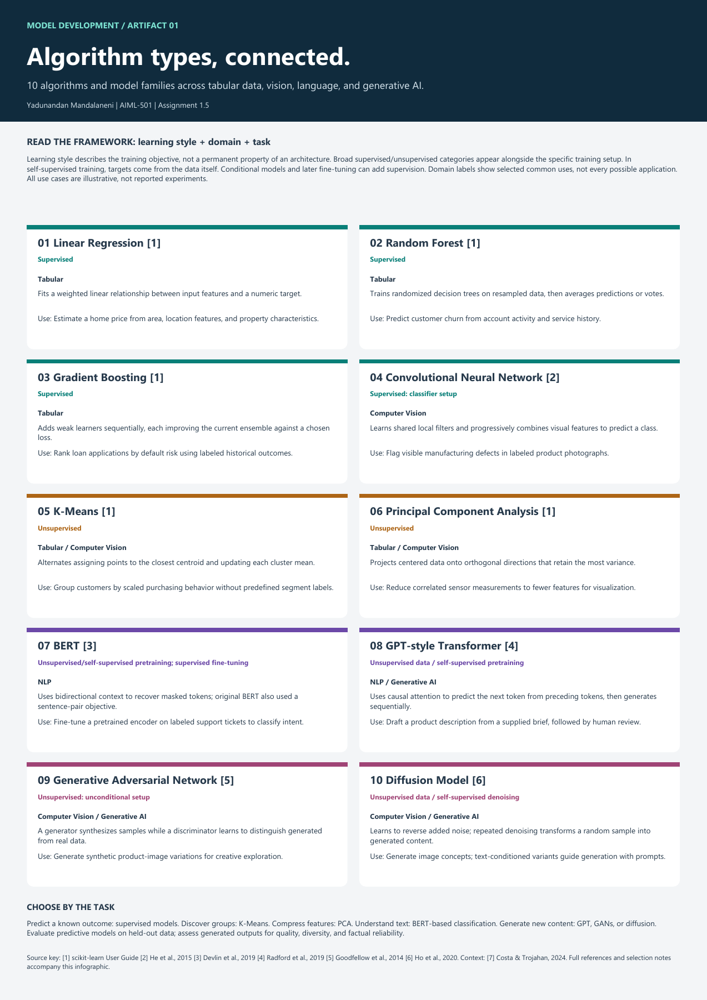

AIML-501 / Assignment 1.5
Algorithm types,
connected.
A practical visual framework for comparing ten algorithms and model families by learning style, application domain, and task.
Download the framework and practical guide (PDF)Download the one-page infographicRead the accessible comparison
Compare the ten approaches
| Algorithm or model family | Learning setup | Domains | How it works | Example application | Selection consideration |
|---|---|---|---|---|---|
| Linear Regression [1] | Supervised | Tabular | Fits a weighted linear relationship between input features and a numeric target. | Estimate a home price from area, location features, and property characteristics. | Start with an interpretable numeric baseline; inspect residuals and assumptions. |
| Random Forest [1] | Supervised | Tabular | Trains randomized decision trees on resampled data, then averages predictions or votes. | Predict customer churn from account activity and service history. | Captures nonlinear patterns; individual predictions are harder to explain than one tree. |
| Gradient Boosting [1] | Supervised | Tabular | Adds weak learners sequentially, each improving the current ensemble against a chosen loss. | Rank loan applications by default risk using labeled historical outcomes. | Useful for structured prediction; tune complexity to control overfitting. |
| Convolutional Neural Network [2] | Supervised: classifier setup | Computer Vision | Learns shared local filters and progressively combines visual features to predict a class. | Flag visible manufacturing defects in labeled product photographs. | Learns image features; performance depends on representative images and labels. |
| K-Means [1] | Unsupervised | Tabular, Computer Vision | Alternates assigning points to the closest centroid and updating each cluster mean. | Group customers by scaled purchasing behavior without predefined segment labels. | Choose k and scale features; compact clusters may miss complex shapes. |
| Principal Component Analysis [1] | Unsupervised | Tabular, Computer Vision | Projects centered data onto orthogonal directions that retain the most variance. | Reduce correlated sensor measurements to fewer features for visualization. | Compresses features, not clusters; high variance need not mean task relevance. |
| BERT [3] | Unsupervised/self-supervised pretraining; supervised fine-tuning | NLP | Uses bidirectional context to recover masked tokens; original BERT also used a sentence-pair objective. | Fine-tune a pretrained encoder on labeled support tickets to classify intent. | The ticket classifier is supervised fine-tuning; BERT is not a free-form text generator. |
| GPT-style Transformer [4] | Unsupervised data / self-supervised pretraining | NLP, Generative AI | Uses causal attention to predict the next token from preceding tokens, then generates sequentially. | Draft a product description from a supplied brief, followed by human review. | Base pretraining is shown; later instruction tuning can add other learning styles. |
| Generative Adversarial Network [5] | Unsupervised: unconditional setup | Computer Vision, Generative AI | A generator synthesizes samples while a discriminator learns to distinguish generated from real data. | Generate synthetic product-image variations for creative exploration. | Training can be unstable or collapse to limited outputs; conditional variants add supervision. |
| Diffusion Model [6] | Unsupervised data / self-supervised denoising | Computer Vision, Generative AI | Learns to reverse added noise; repeated denoising transforms a random sample into generated content. | Generate image concepts; text-conditioned variants guide generation with prompts. | The baseline needs no human class labels; text-image conditioning uses paired information. |
From a task to a starting point
Predict an outcome
Begin with a simple baseline for a labeled target. Compare linear regression, forests, or boosting for tabular data; consider a CNN for images. Validate on held-out data.
Discover structure
Use K-Means for candidate groups and PCA for fewer features. Scale inputs appropriately. Cluster structure and retained variance need interpretation.
Understand or generate
BERT encodes context for downstream understanding tasks. GPT generates tokens; GANs and diffusion synthesize samples through different objectives. Review generated outputs critically.
Learning style, domain, architecture, and task
Supervised
Training examples include a target supplied for the task, such as a defect label or sale price.
Unsupervised
The objective discovers structure or models a distribution without human-provided task labels.
Self-supervised
Targets are constructed from the input, such as masked tokens, next tokens, or injected noise. It is grouped here with learning from unlabeled data.
Generative
Describes the goal of producing samples or content. It does not specify one learning style or one architecture.
How the methods relate
Random Forest vs. Boosting
Both combine trees for labeled prediction. A forest averages randomized trees to reduce variance. Boosting builds learners sequentially to improve a loss. Compare both with the same validation split; neither is automatically best. [10]
K-Means vs. PCA
K-Means assigns observations to groups. PCA creates new continuous feature directions. PCA may precede clustering, but retained variance alone does not show that useful groups exist. [1, 11]
BERT vs. GPT
BERT uses bidirectional context to learn representations. A task head can classify a complete text. A GPT-style base model uses preceding context to predict and generate the next token. Both can be adapted after pretraining. [3, 4]
A worked selection scenario
One retail business may have several needs. These illustrative choices show why the business task must be defined before selecting a model.
| Business need | Candidate approach | Input, output, and quality check |
|---|---|---|
| Predict demand | Linear regression; forest; boosting | Past sales and known features -> predicted units. Compare MAE/RMSE on a later time period and against a simple demand baseline. [8, 9] |
| Segment customers | K-Means; optional PCA | Scaled purchasing features -> candidate groups. Check stability, separation, and business usefulness; groups are not established customer truths. [1, 11] |
| Route support tickets | BERT + classification head | Ticket text plus intent labels -> intent class. Use per-class precision/recall and macro-F1; inspect errors on similar or rare intents. [3, 8] |
| Create campaign content | GPT; GAN; diffusion | Brief -> draft text; noise or conditioning -> image candidates. Review prompt adherence, factual accuracy for text, image quality, and output diversity. [4-6] |
Common misconceptions
A model belongs to only one domain.
The same method can operate on different representations. Forests can use text-derived numeric features; CNNs can appear inside generative systems. The matrix shows selected common uses.
Unsupervised means there is no training signal.
K-Means minimizes within-cluster distance; PCA retains variance; GANs use a discriminator; self-supervised models construct targets. The source of the signal is the distinction.
Generative output is automatically correct.
A plausible sentence can contain false claims, and a realistic image can miss the prompt. Generation quality requires task-specific review; a fluent output is insufficient evidence of factual reliability.
An attractive framework proves a model works.
This artifact explains candidate methods. A deployment decision still needs suitable data, a baseline, independent evaluation, and examination of error costs.
A defensible selection workflow
Define the output and error cost; inspect labels and data quality; establish a simple baseline; split the data to match intended use; tune using training and validation data; and reserve a final test set. Fit preprocessing on training data only. Use time-aware splits when future events are the prediction target. [8, 9]
Artifact information
Introduction and description
This source-backed visual guide connects classical machine learning and modern generative approaches. It provides a downloadable infographic and an accessible text comparison for learners and colleagues exploring model selection.
Objective
Compare ten representative approaches across tabular data, computer vision, NLP, and generative AI; distinguish the learning objective from the model architecture and intended task.
Process
The course brief and linked e-Core article established the scope. Official documentation and original research informed the model descriptions. The framework was organized by training setup, with common domains and illustrative uses. Revisions clarified self-supervised pretraining, supervised fine-tuning, and conditional generation. The first draft was expanded with method comparisons, a task-selection scenario, and evaluation guidance. The PDF was rendered for visual inspection, and the website provides the same information as readable HTML.
Tools and technologies used
ChatGPT/Codex assisted with research synthesis, writing, Python-generated PDF layout, and HTML/CSS implementation. Source material is cited below. GitHub tracks the source versions, and GitHub Pages publishes this portfolio.
Value proposition
The guide makes model-selection conversations more precise by linking an algorithm's objective to its suitable tasks, required information, and limitations.
Unique value
The comparison makes training-stage differences explicit. BERT-based classification and base language-model pretraining appear with their distinct objectives, and the framework separates feature compression from clustering.
Relevance
This artifact supports early model-selection decisions, technical communication, and further study in Model Development. It is a conceptual reference; implementation and empirical evaluation belong to subsequent projects.
References
- scikit-learn developers. User Guide: supervised learning, clustering, and matrix decomposition.
- He, K., Zhang, X., Ren, S., & Sun, J. (2015). Deep Residual Learning for Image Recognition.
- Devlin, J., Chang, M.-W., Lee, K., & Toutanova, K. (2019). BERT: Pre-training of Deep Bidirectional Transformers for Language Understanding.
- Radford, A., Wu, J., Child, R., Luan, D., Amodei, D., & Sutskever, I. (2019). Language Models are Unsupervised Multitask Learners.
- Goodfellow, I., et al. (2014). Generative Adversarial Networks.
- Ho, J., Jain, A., & Abbeel, P. (2020). Denoising Diffusion Probabilistic Models.
- Costa, B., & Trojahan, M. (2024, August 28). What are the differences between AI, ML, DL, and Gen AI? e-Core.
- scikit-learn developers. (n.d.). Metrics and scoring: Quantifying the quality of predictions.
- scikit-learn developers. (n.d.). Cross-validation: Evaluating estimator performance.
- scikit-learn developers. (n.d.). Ensembles: Gradient boosting, random forests, bagging, voting, stacking.
- scikit-learn developers. (n.d.). Decomposing signals in components: Principal component analysis.